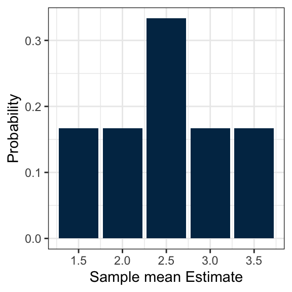

ST 431/531: Sampling Methods
Introduction to Sampling Vocabulary, Probability Sampling & Simple Random Sampling
Week 1
Lecture 1
Outline
- Introductory Vocabulary
- Questionnaire Design
- Introduction to Probability Sampling
- Types of samples
- Notation
- Sampling distribution
Vocabulary
What is a survey?
A survey is a method of obtaining information about a population. Two types:
- Census: all elements of the population are evaluated.
- Sample survey: only a subset of the population is selected.
Often, a full census is infeasible, so a sample is conducted instead.
- Reduced cost
- Greater speed
Can still get estimates of population mean, population total, population proportion, and compare subpopulations.
Survey Example
I want to survey 10 OSU students. Many approaches, for example:
- Stand outside Weniger Hall, talk to first 10 OSU students who come by.
- Use a roster of OSU students, randomly choose 1, talk to them and 9 of their friends.
- Use a roster of OSU students, ask first 10 alphabetically.
- Use a roster of OSU students, randomly choose 10.
Which method seems best?
What are the problems with the others?
This course vs. other statistics courses
Most statistics courses assume that the sample is selected from an infinite population. They call this random sampling:
Let \(X_1, X_2, \ldots X_n\) be \(n\) mutually independent random variables, each of which has the same (possibly unknown) probability density function (pdf) \(f(x)\). Then \(X_1, X_2, \ldots X_n\) constitute a random sample from a distribution that has pdf \(f(x)\).
In this course, the population is finite. Each element of the population has a known and non-zero probability of being selected into the sample. The only thing that’s random is the sample we draw.
Vocabulary
Target population: Population we want to make inference to, e.g.
- OSU students
- Fish-bearing streams in Oregon
Sampled population: Population from which we actually drew the sample, e.g.
- Students walking by Weniger Hall
- Streams on a map
Ideally, the sampled population would be identical to the target population.
Vocabulary
Sample: A subset of the population.
Sampling unit: Object selected for sample, e.g.
- Student
- Stretch of stream
Observational unit: Object on which measurement is taken, e.g.
- Student
- Pool in stream (where fish can be seen)
Vocabulary
Sampling frame: Representation of sampled population (e.g., list or map)

Lohr Figure 1.1: Example target population and sampled population in a telephone survey of likely voters. Not all households have telephones, so a number of persons in the target population of likely voters will not be associated with a telephone number in the sampling frame. In some households with telephones, the residents are not registered to vote and hence are not eligible for the survey. Some eligible persons in the sampling frame population do not respond because they cannot be contacted, some refuse to respond to the survey, and some may be ill and incapable of responding.
Lohr Figure 1.1: Consider a telephone survey of likely voters.
Vocabulary - Types of Error
Sampling error: Variability that would be observed under repeated sampling. Unavoidable unless you take a census. Can be reduced by taking a big sample.
Nonsampling error: Error not due to sampling variation.
- Selection bias
- Nonresponse
- Measurement error
Vocabulary - Nonsampling Error
Selection bias: When sample is unintentionally not representative of population. (Intentionally not representative samples can be adjusted for).
- Undercoverage: Frame missing some elements of target population
- Overcoverage: Frame contains units not in target population
- Self-selection: Sample selects itself (e.g. internet poll)
- Judgment sampling: Researcher selects units that are believed important
- Others
Nonresponse: Some units in sample don’t yield data. Problematic if outcome related to non-response mechanism.
Measurement error: Measurement on a unit differs from what we actually observe.
Questionnaire Design
Questionnaire Design - Guidelines
- Keep wording simple and clear
- Be as specific as possible
- Relate questions to concept of interest
- Decide whether to use open or closed questions
- Open questions: respondents can form own response
- Closed questions: true/false, multiple choice
- Make sure the question asks what you are actually trying to measure
Questionnaire Design - Guidelines (Contd.)
- Avoid leading/loaded questions
- Consider the social desirability of responses (e.g., voting, risky behavior)
- Avoid double negatives
- Use forced-choice, rather than agree/disagree questions
- Ask only one concept per question (avoid double-barreled questions)
- Pay attention to question order effects
Example 1 (wording)
- Do you support the attempt by the USA to bring freedom and democracy to other places in the world?
- Do you support the unprovoked military action by the USA?
Example 2 (agree/disagree)
- Do you think the United States should forbid public speeches against democracy? (21% Yes)
- Do you think the United States should allow public speeches against democracy? (47.8% No)
Example 3 (specificity)
- How many children are in your family?
- How many people under the age of 21 live in your household and receive more than one-half of their financial support from you?
Example 4 (double-barreled question)
- When was the last time you updated your computer and printer?
Probability Sampling
Probability Sampling
In a probability sample, each unit in the population has a known probability of selection, and a chance method is used to choose the specific units included in the sample.
Probability Sampling
There are many types of probability samples. We will cover the main ones in this class.
- Simple random sample
- Stratified sample
- Cluster sample
- Systematic sample
There are also non-probability samples. (Not the focus of this class.)
Simple Random Sampling
A simple random sample (SRS) of size \(n\) is taken when every possible subset of \(n\) units in the population has the same chance of being in the sample. (Chapter 2)

Example of a simple random sample showing points in a 10 by 15 grid. There are 15 points highlighted in a different color in a random arrangement.
Stratified Sampling
In a stratified random sample, the population is divided into subgroups called strata. A SRS is then independently selected in each stratum. (Chapter 3)

Example of a stratified random sample showing points in a 10 by 15 grid. The points are arranged in groups with four different shapes: squares, circles, triangles, and jelly beans. There are several points highlighted in a different color in a random arrangement in each group.
Cluster Sampling
In a cluster sample, observation units are grouped into larger sampling units, called clusters. Take a SRS of clusters and then subsample all or some members of the cluster. (Chapter 5)

Example of a cluster random sample showing points in a 10 by 15 grid. The points are arranged in groups with four different shapes: squares, circles, triangles, and jelly beans. There are several points highlighted in a different color in a random arrangement in the squares group. All points are highlighted in a different color in the triangles group. No points are highlighted in the circles or jelly beans groups.
Systematic Sampling
In a systematic sample, a starting point is chosen from a list of population members using a random number. That unit, and every \(k\)th unit thereafter, is chosen to be in the sample. (Chapter 2.8 and 5.5)

Example of a systemtatic sample showing points in a 10 by 15 grid. There are 10 points highlighted in a different color (one per row) in a diagonal pattern.
Notation for Probability Samples
The finite population or universe of \(N\) units is denoted by the index set
\[\mathcal{U}=\{1,2,\ldots,N\}.\]
Many different samples could be drawn from this population. Denote the particular sample chosen by \(\mathcal{S}\).
Example
\[\mathcal{U}=\{1,2,3,4\}\]
What are the different samples of size 2 that could be chosen from this population?
Example
\[\mathcal{U}=\{1,2,3,4\}\]
What are the different samples of size 2 that could be chosen from this population?
\(\qquad\mathcal{S}_1=\{1,2\}\)
\(\qquad\mathcal{S}_2=\{1,3\}\)
\(\qquad\mathcal{S}_3=\{1,4\}\)
\(\qquad\mathcal{S}_4=\{2,3\}\)
\(\qquad\mathcal{S}_5=\{2,4\}\)
\(\qquad\mathcal{S}_6=\{3,4\}\)
There are 6 possible samples because \({4 \choose 2}=\frac{4!}{2!2!}=6\).
Probability of Being Chosen
In probability sampling, each possible sample \(\mathcal{S}_j\) has a known probability \(P(\mathcal{S}_j)\) of being chosen, and the probabilities of the samples sum to 1:
\[\sum_{j=1}^{\#\text{samples}}P(\mathcal{S}_j)=1\]
The sampling design determines these probabilities. If all the \(P(\mathcal{S}_j)\) are the same, this is a simple random sample.
If the \(P(\mathcal{S}_j)\) are not all the same, this is referred to as an unequal probability design.
Inclusion Probability
\(P(\mathcal{S}_j)\) are known, so the probability that each specific unit appears in the selected sample can be calculated.
\[\begin{align} \pi(i) &= P(\mathrm{unit}\; i \;\mathrm{in \; sample}) \\ &= \sum_{\mathcal{S}_j \;\mathrm{s.t.}\; i\in\mathcal{S}_j} P(\mathcal{S}_j) \end{align}\]
\(\pi(i)\) is called the inclusion probability.
- \(\sum_{i=1}^N\pi(i) > 1\) because two population units may be in the same sample.
- Assume \(\pi(i)>0\) for all \(i=1,\ldots,N\)
Sampling Distribution
Sampling Distribution: The distribution of different values of the statistic obtained by the process of taking all possible samples from the population, taking into account the probability of each sample.
This is a discrete probability distribution.
Sampling Distribution - Example
\[\mathcal{U}=\{1,2,3,4\}\]
What is the sampling distribution of the estimate of the population mean? Assume each sample is equally likely. Use the sample mean as the estimate of the population mean.
\(\qquad\mathcal{S}_1=\{1,2\}\)
\(\qquad\mathcal{S}_2=\{1,3\}\)
\(\qquad\mathcal{S}_3=\{1,4\}\)
\(\qquad\mathcal{S}_4=\{2,3\}\)
\(\qquad\mathcal{S}_5=\{2,4\}\)
\(\qquad\mathcal{S}_6=\{3,4\}\)
Sampling Distribution - Example
\[\mathcal{U}=\{1,2,3,4\}\]
What is the sampling distribution of the estimate of the population mean? Assume each sample is equally likely. Use the sample mean as the estimate of the population mean.
\(\qquad\mathcal{S}_1=\{1,2\} \qquad \bar{y}_1=1.5\)
\(\qquad\mathcal{S}_2=\{1,3\} \qquad \bar{y}_2=2\)
\(\qquad\mathcal{S}_3=\{1,4\} \qquad \bar{y}_3=2.5\)
\(\qquad\mathcal{S}_4=\{2,3\} \qquad \bar{y}_4=2.5\)
\(\qquad\mathcal{S}_5=\{2,4\} \qquad \bar{y}_5=3\)
\(\qquad\mathcal{S}_6=\{3,4\} \qquad \bar{y}_6=3.5\)
Sampling Distribution - Example
\[\mathcal{U}=\{1,2,3,4\}\]
What is the inclusion probability of each member of the population?
\(\qquad\mathcal{S}_1=\{1,2\}\)
\(\qquad\mathcal{S}_2=\{1,3\}\)
\(\qquad\mathcal{S}_3=\{1,4\}\)
\(\qquad\mathcal{S}_4=\{2,3\}\)
\(\qquad\mathcal{S}_5=\{2,4\}\)
\(\qquad\mathcal{S}_6=\{3,4\}\)
\(\pi_1=\sum_{\mathcal{S}: 1\in\mathcal{S}}P(\mathcal{S})=\frac{1}{6}+\frac{1}{6}+\frac{1}{6}=\frac{1}{2}\)
\(\pi_2=\frac{1}{2}\)
\(\pi_3=\frac{1}{2}\)
\(\pi_4=\frac{1}{2}\)
Properties of the Sampling Distribution
The sampling distribution is of some statistic (quantity calculated from sample). For example
- the sampling distribution of the estimate of the population mean, \(\bar{y}\)
- the sampling distribution of the estimate of the population total, \(\hat{t}\)
Let \(\theta\) be a population parameter (e.g., the population mean \(\bar{y}_\mathcal{U}\), the population total \(t\), the population mean \(p\)) and let \(\hat{\theta}\) be an estimate of \(\theta\) (e.g., \(\bar{y}\), \(\hat{t}\), \(\hat{p}\), respectively).
Properties of the Sampling Distribution
- The expected value of \(\hat{\theta}\) is the mean of the sampling distribution of \(\hat{\theta}\):
\[E[\hat{\theta}]=\sum_{\mathcal{S}}\hat{\theta}_\mathcal{S} P(\mathcal{S})\]
- The estimation bias of the estimator \(\hat{\theta}\) is \[\text{Bias}[\hat{\theta}]=E[\hat{\theta}]-\theta\] If \(\text{Bias}[\hat{\theta}]=0\), then we say \(\hat{\theta}\) is an unbiased estimator of the population parameter, \(\theta\).
Properties of the Sampling Distribution
- The variance of the sampling distribution of \(\hat{\theta}\) is
\[\begin{align*} V(\hat{\theta}) &= E[(\hat{\theta}-E[\hat{\theta}])^2] \\ &= \sum_{\text{all }\mathcal{S}}P(\mathcal{S})[\hat{\theta}_\mathcal{S}-E(\hat{\theta})]^2 \\ \end{align*}\]
- The mean squared error (MSE) of the estimator \(\hat{\theta}\) is
\[\begin{align*} \text{MSE}[\hat{\theta}] &= E[(\hat{\theta}-\theta)^2] \\ &= V(\hat{\theta}) + [\text{Bias}(\hat{\theta})]^2 \\ \end{align*}\]
How good is your estimator?

How good is your estimator? (Contd.)
Archer A is unbiased. \(E(\hat{\theta}) = \theta\), but any individual arrow may be far from center.
Archer B is precise. \(V(\hat{\theta})\) is small, but may miss center.
Archer C is accurate. \(\text{MSE}(\hat{\theta})\) is small.
Example, Continued
\[\mathcal{U}=\{1,2,3,4\}\]
Find the expected value, bias, variance, and mean squared error of the sampling distribution of the sample mean. Recall all samples are equally likely.
\(\qquad\mathcal{S}_1=\{1,2\} \qquad \bar{y}_1=1.5\)
\(\qquad\mathcal{S}_2=\{1,3\} \qquad \bar{y}_2=2\)
\(\qquad\mathcal{S}_3=\{1,4\} \qquad \bar{y}_3=2.5\)
\(\qquad\mathcal{S}_4=\{2,3\} \qquad \bar{y}_4=2.5\)
\(\qquad\mathcal{S}_5=\{2,4\} \qquad \bar{y}_5=3\)
\(\qquad\mathcal{S}_6=\{3,4\} \qquad \bar{y}_6=3.5\)
Example, Continued
1. Expected value:
\[E[\bar{y}]=\sum_\mathcal{S}\bar{y}_\mathcal{S}P(\mathcal{S})=\frac{1}{6}(1.5) + \frac{1}{6}(2)+\cdots+\frac{1}{6}(3.5)=2.5\]
2. Bias:
\[\text{Bias}[\bar{y}]=E[\bar{y}]-\bar{y}_\mathcal{U}\] and \[\bar{y}_\mathcal{U}=(1+2+3+4)/4=2.5\qquad\qquad\] The bias is therefore 0!
Example, Continued
3. Variance:
\[\begin{align*} V(\bar{y})&=\sum_\mathcal{S}P(\mathcal{S})[\bar{y}_S-E(\bar{y})]^2 \\ &=\frac{1}{6}(1.5-2.5)^2+\cdots\frac{1}{6}(3.5-2.5)^2=0.41667 \end{align*}\]
4. MSE:
\[\text{MSE}(\bar{y})=V(\bar{y})+[\text{Bias}(\bar{y})]^2=0.41667 + 0=0.41667\]
Lecture 2
Outline
- Motivation and when to use simple random sampling
- Estimating a population
- mean
- variance
- total
- proportion
- Finding the variance of an estimator
- Standard error
Simple Random Sampling
With vs. Without Replacement
In a simple random sample with replacement (SRSWR), each unit is randomly selected with probability \(1/N\) until \(n\) units are selected. The sample may have duplicates.
However, practically, if we select the same unit twice we don’t get more information.
Therefore, conduct a simple random sample without replacement (SRS): every possible subset of size \(n\) has the same probability of being selected as the sample.
Simple Random Sampling
To take a SRS, you need a list of all observation units in the population. Assign each unit a number from \(1\) to \(N\).
Select \(n\) of these numbers using a random process such that all numbers are different and \(n\leq N\). Can think of this like drawing numbers out of a hat.
Each sample has chance \(1 / {{N}\choose{n}}\) of being selected. This means that there are \({{N}\choose{n}}\) possible samples of size \(n\), each of which is equally likely to be selected.
Each unit has inclusion probability \(\pi_i=\frac{n}{N}\).
When to use SRS
- When you know little about the population other than the sampling frame
- If you need to defend your sampling design (e.g., to congress, in a lawsuit)
- When the primary interest is in multivariate relationships for the whole population
Why is SRS not used all the time?
- Expensive
- Not feasible in practice: requires all elements be identified and labeled prior to sampling
- May want to utilize groupings within the population
Example: An agricultural survey identifies all counties in Oregon. Goal is to survey all farmers. One may consider a Simple Random Sample of farmers. However, it is too time consuming and expensive to develop a list of all farmers in the state. Instead of identifying and labeling all farmers in Oregon, we identify and label all counties. Counties are randomly selected, and then some farmers within that county are selected to survey.
3 types of means and variances
| Set | Mean | Variance |
|---|---|---|
| Population \(\mathcal{U}\) | \(\displaystyle \bar{y}_{\mathcal{U}}=\frac{1}{N}\sum_{i=1}^N y_i\) | \(\displaystyle S^2=\frac{1}{N-1}\sum_{i=1}^N(y_i-\bar{y}_{\mathcal{U}})^2\) |
| Sample \(\mathcal{S}\) | \(\displaystyle \bar{y}_{\mathcal{S}}=\frac{1}{n}\sum_{i\in\mathcal{S}}y_i\) | \(\displaystyle s^2=\frac{1}{n-1}\sum_{i\in\mathcal{S}}(y_i-\bar{y}_{\mathcal{S}})^2\) |
| Sampling distribution of \(\hat{\theta}\) | \(\displaystyle E(\hat{\theta})=\sum_{j=1}^{\text{# samples}}P(\mathcal{S}_j)\hat{\theta}_{\mathcal{S}_j}\) | \(\displaystyle V(\hat{\theta})=\sum_{j=1}^{\text{# samples}}P(\mathcal{S}_j)[\hat{\theta}_{\mathcal{S}_j}-E(\hat{\theta})]^2\) |
In a real situation, we only observe the sample, so we can calculate \(\bar{y}_\mathcal{S}\) and \(s^2\). The other means and variances are conceptual.
SRS: Estimating the population mean
To estimate the population mean \(\bar{y}_\mathcal{U}\), use the sample mean
\[\begin{equation*} \bar{y}_\mathcal{S}=\frac{1}{n}\sum_{i\in\mathcal{S}}y_i \end{equation*}\]
\(\bar{y}_\mathcal{S}\) is an unbiased estimator of \(\bar{y}_\mathcal{U}\).
Example
Demonstrate that \(\bar{y}_\mathcal{S}\) is an unbiased estimator of \(\bar{y}_\mathcal{U}\) for a SRS of size 3 from a population \(\mathcal{U}=\{3,6,9,21\}\).
\(\mathcal{S}_1=\{3,6,9\} \,\,\,\qquad \bar{y}_1=6\)
\(\mathcal{S}_2=\{3,6,21\} \qquad \bar{y}_2=10\)
\(\mathcal{S}_3=\{3,9,21\} \qquad \bar{y}_3=11\)
\(\mathcal{S}_4=\{6,9,21\} \qquad \bar{y}_4=12\)
\[\begin{align*} E[\bar{y}]&=\frac{1}{4}\sum_{j=1}^4\bar{y}_j=\frac{1}{4}(6+10+11+12)=9.75 \\ \bar{y}_\mathcal{U}&=\frac{1}{4}(3+6+9+21) = 9.75 \end{align*}\]
Estimating the population variance
To estimate the population variance \(S^2\), use the sample variance \[s^2=\frac{1}{n-1}\sum_{i\in\mathcal{S}}(y_i-\bar{y}_\mathcal{S})^2\] \(s^2\) is an unbiased estimator of \(S^2\).
Example
Demonstrate that \(s^2\) is an unbiased estimator of \(S^2\) for a SRS of size 3 from a population \(\mathcal{U}=\{3,6,9,21\}\).
\(\mathcal{S}_1=\{3,6,9\} \,\,\,\qquad \bar{y}_1=6 \,\,\,\qquad s^2_1=\frac{1}{3-1}[3^2+0^2+3^2]=9\)
\(\mathcal{S}_2=\{3,6,21\} \qquad \bar{y}_2=10 \qquad s^2_2=\frac{1}{3-1}[7^2+4^2+11^2]=93\)
\(\mathcal{S}_3=\{3,9,21\} \qquad \bar{y}_3=11 \qquad s^2_3=84\)
\(\mathcal{S}_4=\{6,9,21\} \qquad \bar{y}_4=12 \qquad s^2_4=63\)
Example (Contd.)
\[\begin{align*}E(s^2)&=\frac{1}{4}\sum_{j=1}^4s^2=\frac{1}{4}(9+93+84+63)=62.25 \\ S^2&=\frac{1}{N-1}\sum_{i=1}^N(y_i-\bar{y}_\mathcal{U})^2 \\ &=\frac{1}{3}[(3-9.75)^2+\ldots+(21-9.75)^2] = 62.25 \end{align*}\]
The variance of \(\bar{y}\)
The variance of \(\bar{y}_\mathcal{S}\) measures the variability among estimates of \(\bar{y}_\mathcal{U}\) from different samples. It is NOT the variance of the population or the variance of any individual sample.
\[\begin{equation*} V(\bar{y}_\mathcal{S}) = \frac{S^2}{n}\underbrace{\left(1-\frac{n}{N}\right)}_{\substack{\text{finite} \\ \text{population} \\ \text{correction}}} \end{equation*}\]
where \(S^2\) is the population variance.
Finite Population Correction (fpc)
\[\text{fpc}=\left(1-\frac{n}{N}\right)\]
For finite populations, the larger our sample, the smaller the variance. \(\frac{n}{N}\) is called the sample fraction. Large sample fractions result in small variance.
- If \(n=N\) (i.e., taking a census), then variance is 0
- If sample fraction small, larger variance.
Estimating the variance of \(\bar{y}\)
| Exact | Estimated |
|---|---|
| \(V(\bar{y}_\mathcal{S}) = \frac{S^2}{n}\left(1-\frac{n}{N}\right)\) | \(\hat{V}(\bar{y}_\mathcal{S})=\frac{s^2}{n}\left(1-\frac{n}{N}\right)\) |
\(\hat{V}(\bar{y}_\mathcal{S})\) is an unbiased estimator of \(V(\bar{y}_\mathcal{S})\).
Standard Error
The standard error (SE) is the square root of the estimated variance of \(\bar{y}\):
\[\text{SE}(\bar{y})=\sqrt{\hat{V}(\bar{y})}=\sqrt{\frac{s^2}{n}\left(1-\frac{n}{N}\right)}\]
It is a measure of the precision of an estimate. It is estimate to the standard deviation of the sampling distribution.
Totals
If we know the population mean and size, we can easily calculate the total. \[t=\sum_{i=1}^N y_i = N\bar{y}_\mathcal{U}\]
The sample total \(\hat{t}\) is an unbiased estimator for the population total \(t\): \[\hat{t}=N\bar{y}=\frac{N}{n}\sum_{i\in\mathcal{S}}y_i\]
Totals
Since we know \(E(\bar{y})=\bar{y}_\mathcal{U}\) for SRS,
\[\begin{align*} E(\hat{t})&=E(N\bar{y})\\ &=NE(\bar{y}) \\ &=N\bar{y}_\mathcal{U} \\ &=t \end{align*}\]
Totals
The variance of the estimate of the population total is:
\[\begin{align*} V(\hat{t})&=V(N\bar{y})\\ &=N^2V(\bar{y})\\ &=N^2 \left[\frac{S^2}{n}\left(1-\frac{n}{N}\right)\right] \\ &=N (N-n)\left(\frac{S^2}{n}\right) \end{align*}\]
Totals
Unbiased estimator of the variance for the estimate of the population total:
\[\begin{align*} \hat{V}(\hat{t})&=N^2\hat{V}(\bar{y})\\ &=N(N-n)\left(\frac{s^2}{n}\right) \end{align*}\]
Proportions
We may want to estimate a population proportion. This is a special case of estimating a mean.
\[\begin{align*} p&=\frac{1}{N}\sum_{i=1}^N y_i \qquad \text{where }y_i=\begin{cases}1 & \text{if }i\text{ has the characteristic} \\ 0 & \text{otherwise}\end{cases} \\ &=\bar{y}_\mathcal{U} \\ \end{align*}\]
An unbiased estimator for \(p\) is \[\hat{p}=\bar{y}\]
Proportions
Because the response \(y_i\) only takes on two values (0 or 1), the variance formulas can be simplified:
\[\begin{align*} S^2&=\frac{1}{N-1}\sum_{i=1}^N (y_i-p)^2 \\ &=\frac{1}{N-1}\left(\sum_{i=1}^Ny_i^2-2p\sum_{i=1}^N + y_i+Np^2\right) \\ &= \frac{1}{N-1}(Np-2pNp+Np^2) \quad \text{since } y_i=y_i^2 \\ &=\frac{N}{N-1}p(1-p) \\ \\ V(\hat{p})&=\left(\frac{N-n}{N-1}\right)\frac{p(1-p)}{n} \\ \end{align*}\]
Proportions
Because the response \(y_i\) only takes on two values (0 or 1), the variance formulas can be simplified:
\[\begin{align*} s^2&=\frac{n}{n-1}\hat{p}(1-\hat{p}) \\ \\ \hat{V}(\hat{p})&=\left(1-\frac{n}{N}\right)\frac{\hat{p}(1-\hat{p})}{n-1} \end{align*}\]
Summary
Let \(y_i\) be the numeric response from the \(i\)th member of the population.
| What you want to estimate | Formula | Estimator | Standard Error |
|---|---|---|---|
| Pop Total | \(t=\sum_{i=1}^N y_i\) | \(\hat t=N\bar y\) | \(N\sqrt{(1- \frac{n}{N}) \frac{s^2}{n}}\) |
| Pop mean | \(\bar y_{\mathcal U}=\frac{1}{N}\sum_{i=1}^N y_i\) | \(\bar y\) | \(\sqrt{(1- \frac{n}{N}) \frac{s^2}{n}}\) |
| Pop proportion | \(p=\frac{1}{N}\sum_{i=1}^N\mathbb{1}(y_i=\text{char})\) | \(\hat p\) | \(\sqrt{(1- \frac{n}{N}) \frac{\hat p(1-\hat p)}{(n-1)}}\) |
Questions?
All the Best for HW1 !!!
Revisit these in form of practice problems and homework, but also from some example based on your interest.